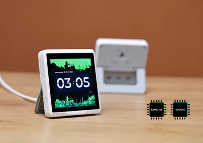
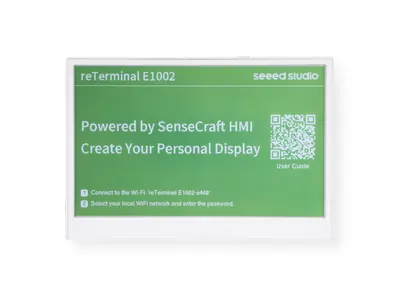
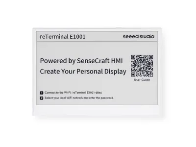
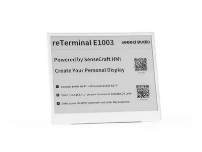
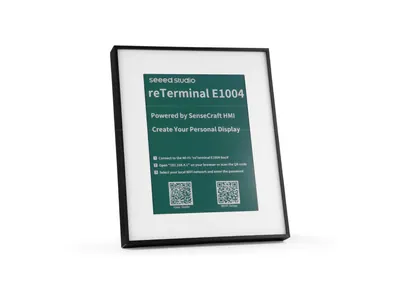

Seeed Studio ESP32 display boards
8 boards – ESP32-S3. Filter and compare them in the interactive catalog →

SenseCAP Indicator D13.95" 480x480 Capacitive touch · ESP32-S3 · 8MB (ESP32-S3) + 2MB (RP2040) flash- SenseCAP Indicator D1L3.95" 480x480 Capacitive touch · ESP32-S3 · 8MB (ESP32-S3) + 2MB (RP2040) flash
- SenseCAP Indicator D1Pro3.95" 480x480 Capacitive touch · ESP32-S3 · 8MB (ESP32-S3) + 2MB (RP2040) flash
- SenseCAP Indicator D1S3.95" 480x480 Capacitive touch · ESP32-S3 · 8MB (ESP32-S3) + 2MB (RP2040) flash

reTerminal E10027.3" 800x480 E-paper · ESP32-S3 · 32MB flash, 8MB PSRAM
reTerminal E10017.5" 800x480 E-paper · ESP32-S3 · 32MB flash, 8MB PSRAM
reTerminal E100310.3" 1404x1872 E-paper Capacitive touch · ESP32-S3 · 32MB flash, 8MB PSRAM
reTerminal E100413.3" 1200x1600 E-paper · ESP32-S3 · 32MB flash, 8MB PSRAM